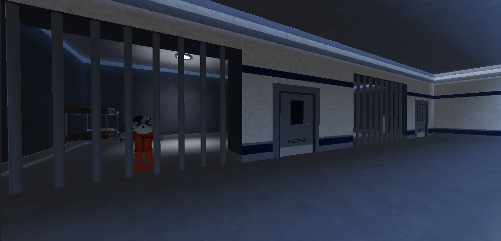
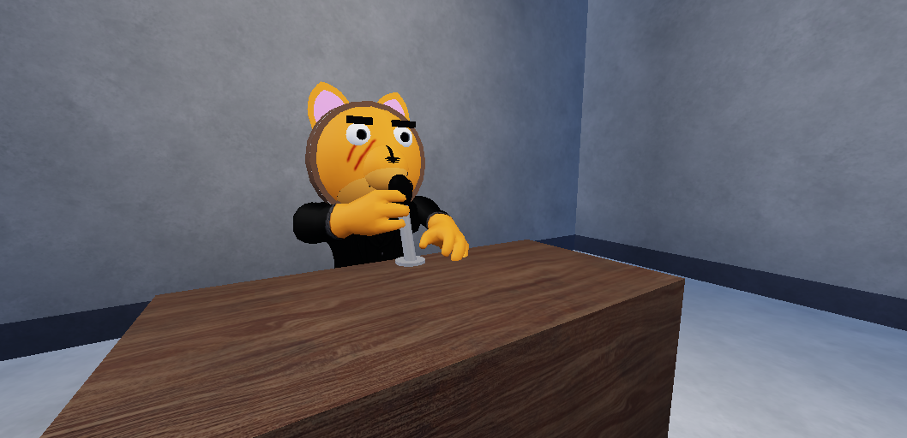

Materia por: Daniel Grey
Enterprise Account Rogers ProfileA cura para a gripe de Leop foi feita e liberada para testes há pouco tempo atras. E pouco tempo depois, quem tomou os testes da vacina começaram a apresentar diversos sintomas como: Tosse extrema, febre, dores no corpo e nas articulações, falta de ar e comportamento agressivo. Com alguns individuos apresentando também uma vontade incontrolavel de ir para cavernas profundas.
Grande parte das pessoas que testaram essa vacina eram presos, e policiais dessas prisões afirmam que, diversos presos que possuiam bom comportamento, após tomarem a vacina, se tornaram agressivos a tal ponto que eles começaram a arranhar e tentar derrubar as portas e barras de suas celas para atacar outros prisioneiros e policiais rondando por perto, com alguns desses tendo conseguido, e devido a isso essas prisões tiveram que investir em barras e portas mais resistentes.
Foto das celas de prisão em SnowVille.
Um policial relatou que um prisioneiro, chamado de Leon Roger, quebrou a porta de sua cela, atacou outros 3 prisioneiros e, antes que pudesse ser contido, escapou da penitenciaria e ficou desaparecido por dias, sendo encontrado no fundo de uma caverna, a mesma em que o fungo cordyceps Infectio Profundis foi encontrado, completamente imovel e com partes do fungo saindo por seu corpo, a policia acredita que ele está morto, por isso proibiu a entrada da caverna para fazer investigações.
Ao ser questionada a empresa Roger's afirmou que: "Já estamos cientes do ocorrido e estamos trabalhando em uma maneira de resolve-lo. Os responsaveis já foram penalizados, não há nenhum motivo para se preocupar.", ao pedir para eles elaborarem mais sobre o'que estão fazendo para resolver isso, eles disseram que não podem revelar por ser documentos confidenciais.
Vitor Johnson, dono da Roger's, falando em conferencia.